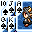
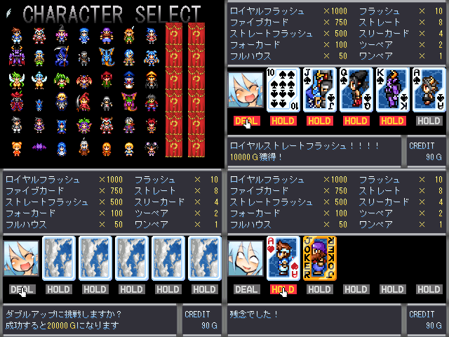

No.19-もしもポーカー
■もしもポーカー 中の外の人
紹介文
ゲーセンとかでよくある1人用ポーカーをツクールで再現してみた。 エンディングは無いから気楽に遊んでいいのよ。 このゲームは、 あまり意味のないキャラセレクト 9年前のPCでもサクサク動くイカサマ無しのスクリプト いつ外れるかわからないダブルアップシステム 開放条件ややキツめ？の12人の隠しキャラ の提供でお送りします。
管理人から一言: 脱衣ポーカーで磨いたテクニックを使うときが来たようだな・・・。
© VIPRPG